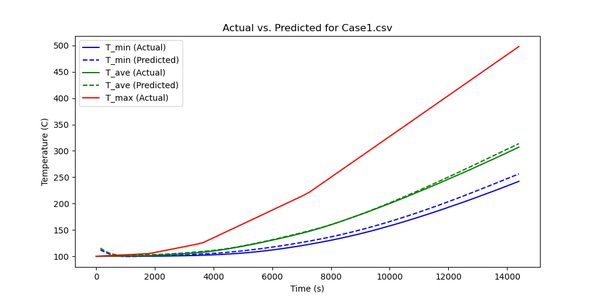

Software, machine learning, and the things with wires coming out of them.
Mar 2026 to present, robotics and edge AI
Iron Bark, autonomous VLA robot dog
A multithreaded perception pipeline combining YOLOv11 object detection, multi-shot ArcFace biometric enrollment, and a vision-language model across a distributed Pi 5 and GPU compute architecture.
- Eliminated VLM hallucinations with YOLO-grounded prompting: real-time detection counts get injected into the VLM context.
- Swapped LLaVA-7B for Moondream and cut latency 4.7x.
- Behavior state machine, IDLE to FOLLOW to SEARCH to EXPLORE, with hysteresis-based transitions over a dual-camera edge system on ZeroMQ.
Jul 2025 to present, generative models
Rembeetle, real-time agentic voice platform
Sub-second bidirectional voice AI orchestrating Whisper ASR, GPT-4o, TTS, and Silero VAD, with retrieval-augmented memory on pgvector and tool calling over the Model Context Protocol.
Visit rembeetle.com
Oct 2024, AI and hardware
The Carbeetle Project
A YOLOv11 model on a Raspberry Pi watches a live camera feed, recognizes the family E46, and fires a relay to open the garage door on sight.
View on GitHub
Sep 2025 to Nov 2025, computer vision
Voice-controlled robotic arm
A 4-DOF arm driven by a custom YOLOv11 model, with a deterministic control state machine mapping camera depth to servo angles at 0.5-degree accuracy, streamed to a Raspberry Pi over UDP.
Oct 2024, machine learning
Thermal performance predictor
Time-sequential neural networks standing in for slow thermal energy storage simulations. At Calit2 the same work cut a 15-hour simulation to 6 minutes including training.
View on GitHub

Sep 2024, AI in education
Automated Python quiz generator
GPT writes quiz questions for UC Irvine's intro course, a synthesized voice reads them, and a video pipeline cuts them into short-form review clips. Cut content-creation workload by 93%.
View on GitHub
May 2024, artificial intelligence
Minesweeper AI
An agent that clears boards using deterministic logical inference first, then probability estimates when certainty runs out. It outperformed 80 percent of participants in its course tournament.
View on GitHub